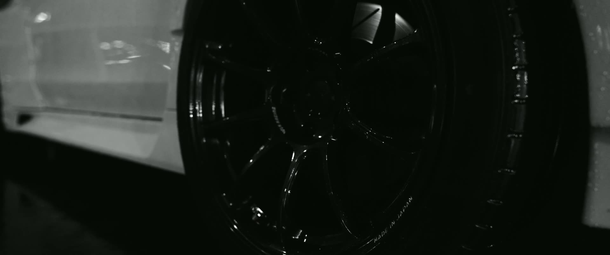
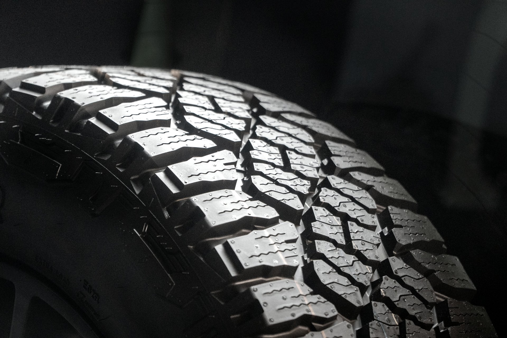
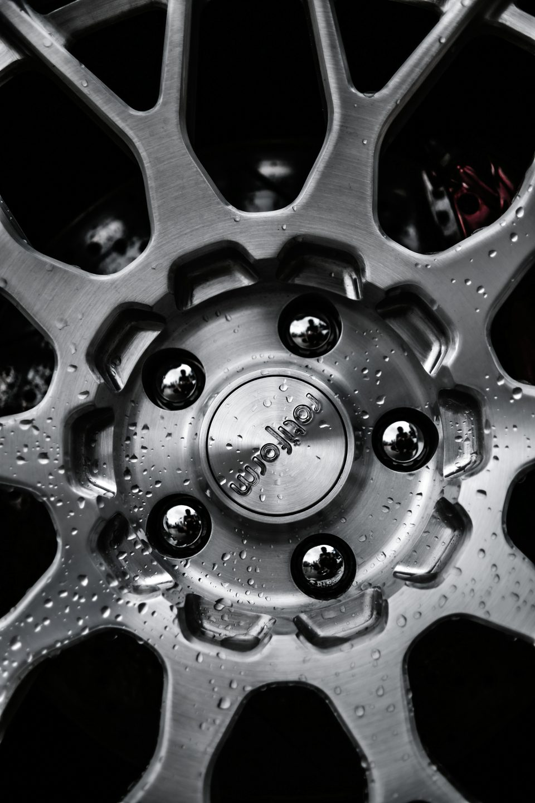
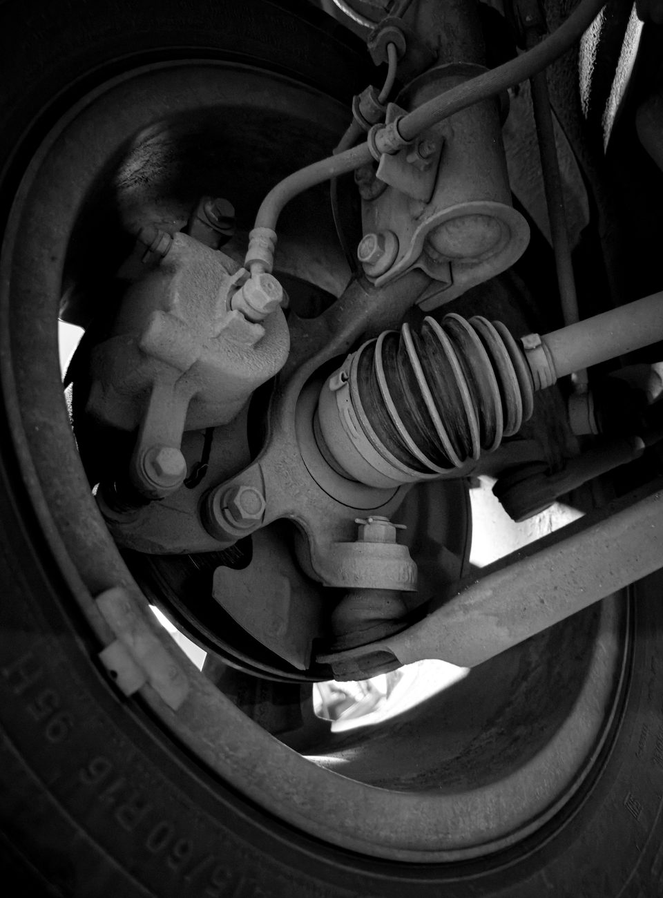
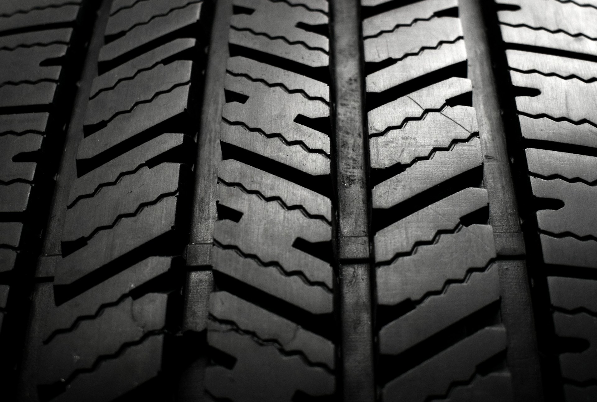
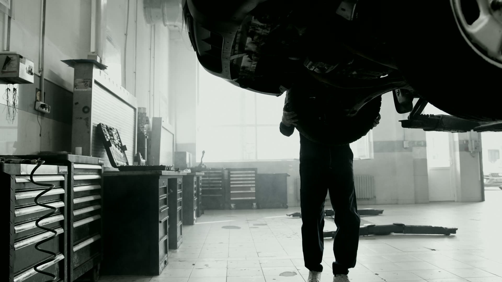
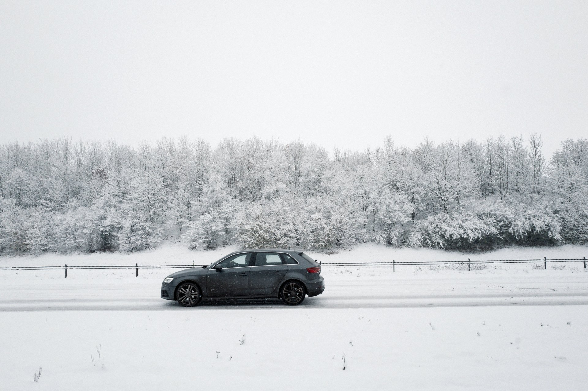
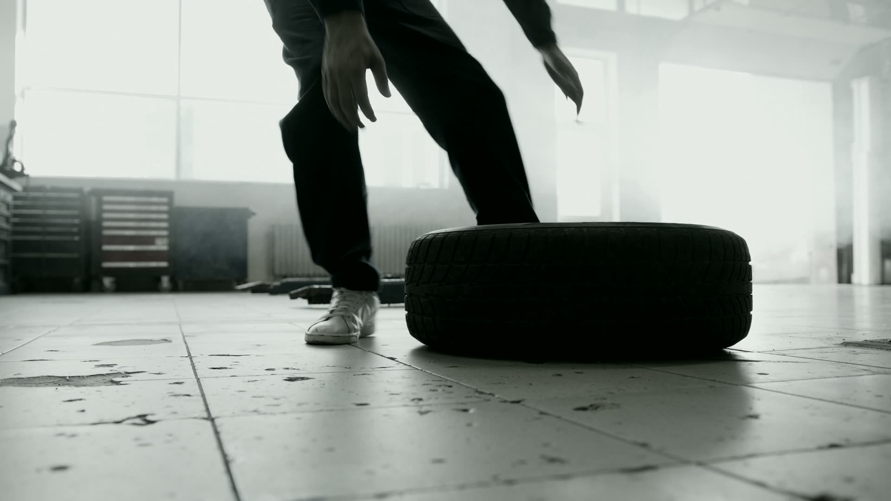

Dæk til personbil
Sommer- og vinterdæk i de almindelige størrelser fra 14 til 18 tommer.

Dæk · fælge · dækskift i København S
SKAN-X-DÆK har alt i dæk til personbiler og varebiler – og specialdæk til sækkevogne og lignende. Vi er specialister i bred-dæk og vinterdæk på fælge. Montering og balancering er med i dækprisen.
Ydelser
Vi finder dæk til hverdagsbilen, varebilen og det, der er svært at skaffe. Ring med bilens dækstørrelse, så giver vi et tilbud.
Sommer- og vinterdæk i de almindelige størrelser fra 14 til 18 tommer.
Forstærkede dæk til varevogne, så bilen holder til vægten hele året.
Dæk til sækkevogne, trailere og andet, der ikke er standard.
Vi er specialister i bred-dæk, også i de lave profiler.
Færdige sæt på fælge gør skiftet hurtigt, når vejret vender.
Stort udvalg i alufælge. Alufælg koster 55,- kr./stk. ekstra ved montering.



Byg dit hjul
Vælg fælg, dæk og tomme, og drej hjulet rundt. Det er en illustration – ikke en bestemt fælgmodel. Send valget med, så giver vi pris på et sæt.
Dæk & fælge
Står din størrelse ikke på listen, så ring alligevel – vi skaffer de fleste dæk hjem.
Vi giver pris på telefon eller mail – vælg størrelsen først, så er den skrevet ind i mailen.
Alle dækpriser er inkl. moms, montering og balancering. Alufælg +55,- kr./stk.
Fælge fra blandt andre

Sådan foregår det
Tre enkle skridt. Har du dækstørrelsen klar, går det hurtigere.
Oplys bilens dækstørrelse, for eksempel 195/65 R15. Skriver du på mail, så skriv gerne dit telefonnummer, så ringer vi tilbage.
Du får et tilbud på dæk eller fælge, og vi aftaler hvornår du kommer forbi på Artillerivej.
Vi monterer og balancerer, mens du venter. Husk at dækskift skal være senest kl. 15.30 på hverdage.

Værkstedet · 4K
Vinter
Vinterdæk på fælge gør skiftet hurtigt, og bilen står rigtigt, når vejret vender. Ring i god tid, så vi har dine dæk hjemme.

Artillerivej 157 · København S
Ring med din dækstørrelse, så finder vi dækkene og en tid, der passer.
Find vej
Vi ligger på Artillerivej 157 på Islands Brygge-siden af Amager. Der er plads til at parkere lige uden for porten.
Knappen åbner dit mailprogram med teksten færdig. Vi bekræfter tiden, når vi har set den.